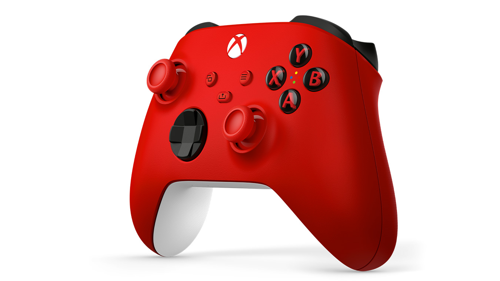

Control Inalámbrico Xbox
Precio: €29.99

Eleva tu juego
Disfruta del diseño modernizado del Control inalámbrico Xbox, con superficies esculpidas y una geometría refinada para una mayor comodidad durante el juego. Mantén el objetivo con el agarre texturizado y pad direccional híbrido. Captura y comparte contenido sin problemas con un botón Compartir dedicado. Empareja rápidamente, juega y cambia entre dispositivos como Xbox Series X|S, Xbox One, PC Windows, Android e iOS.
Características
Mantén el objetivo
Mantén el objetivo con el nuevo pad direccional híbrido, agarre texturizado en los gatillos, botones y funda trasera.
Cambia entre dispositivos
Empareja y cambia fácilmente entre dispositivos como Xbox Series X, Xbox Series S, Xbox One, PC Windows, Android e iOS.
Compatibilidad
Incluye tecnología inalámbrica de Xbox y Bluetooth® para jugar sin cables en consolas, PC, teléfonos y tabletas compatibles. Conecta cualquier audífono compatible en el conector para auriculares estéreo de 3.5 mm.
Beneficios
A continuacion, te presento algunos de los beneficios que obtienes al utilizar nuestro producto:
- Conéctate a las consolas Xbox con la tecnología inalámbrica de Xbox. Conéctate de forma inalámbrica a PC Windows 10/11, tabletas, iOS y Android mediante Bluetooth.
- Compatible con
- Xbox Series X
- Xbox Series S
- Xbox One
- Windows 10/11
- Android
- iOS
- Pilas AA para tener hasta 40 horas de autonomía